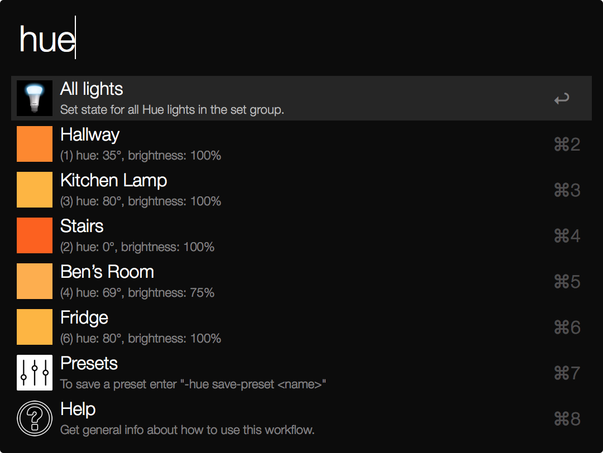

Cocolist
2019
Find eco-conscious businesses in Saigon.

Louie’s New York
2017
Database of filming locations for the TV series Louie.
Hue Harmony
2016
Small webapp for setting Philips Hue light colors according to relationships on an artists’ color wheel.

Hue Alfred Workflow
2014
Alfred workflow for controlling a Philips hue lighting system.
